Setelah mempelajari materi Sel, kompetensi yang diharapkan dikuasai peserta adalah:
1. Memahami teori sel
2. Memahami struktur/organel sel dan fungsinya
3. Memahami perbedaan sel tumbuhan dan sel hewan
4. Memahami transportasi zat pada sel
Setelah melaksanakan pembelajaran, guru dapat menunjukkan beberapa indikator tentang Sel berikut ini:
1. Menjelaskan teori sel.
2. Menjelaskan struktur pada sel
3. Menjelaskan perbedaan sel tumbuhan dan hewan
4. Menjelaskan transportasi zat melalui membrane
Sel merupakan unit terkecil yang menyusun tubuh makhluk hidup dan merupakan tempat terselenggaranya fungsi kehidupan. Sel pertama kali ditemukan oleh seorang ilmuwan Inggris bernama Robert Hooke pada tahun 1665. Saat itu Hooke mengamati sayatan gabus dari batang tumbuhan yang sudah mati menggunakan mikroskop sederhana. Ia menemukan adanya ruangruang kosong yang dibatasi dinding tebal dan menamakannya dengan istilah cellulae artinya sel. Penemuan tantang sel berkembang lagi ketika ilmuwan Belanda bernama Antonie van Leeuwenhoek merupakan orang pertama yang menemukan sel hidup. Ia merancang sebuah mikroskop kecil berlensa tunggal yang digunakan untuk mengamati air rendaman jerami. Ia menemukan organisme yang bergerak-gerak di dalam air yang kemudian disebut bakteri. Sejak saat itu, beberapa ilmuwan berlomba untuk mengetahui lebih banyak tentang sel. Kemudian lahirlah teori-teori tentang sel. Beberapa teori tentang sel sebagai berikut:
Sel merupakan kesatuan atau unit struktural makhluk hidup, Tahun 1839 Jacob Schleiden, ahli botani berkebangsaan Jerman mengadakan pengamatan mikroskopis terhadap sel tumbuhan. Pada waktu yang bersamaan Theodore Schwan melakukan pengamatan terhadap sel hewan. Dari hasil pengamatannya mereka menarik kesimpulan bahwa:
a. Tiap makhluk hidup terdiri dari sel
b. Sel merupakan unit struktural terkecil pada makhluk hidup
c. Organisme bersel tunggal terdiri dari sebuah sel, organisme lain yang tersusun lebih dari satu sel disebut organisme bersel banyak.
Sel sebagai unit fungsional makhluk hidup, Max Schultze (1825–1874) menyatakan bahwa protoplasma merupakan dasar fisik kehidupan bukan hanya bagian struktural sel tetapi juga merupakan bagian penting sel sebagai tempat berlangsung reaksi-reaksi kimia kehidupan.
Sel sebagai unit pertumbuhan makhluk hidup Rudolph Virchow (1821–1902) berpendapat bahwa omnis cellula ex cellulae (semua sel berasal dari sel sebelumnya)
Sel sebagai unit hereditas makhluk hidup Ilmu pengetahuan dan teknologi mendorong penemuan unit-unit penurunan sifat yang terdapat dalam nukleus, yaitu kromosom. Dalam kromosom terdapat gen yang merupakan unit pembawa sifat. Melalui penemuan ini muncullah teori bahwa sel merupakan unit hereditas makhluk hidup.
Secara struktural dan fungsional, sel terdiri dari komponen bahan kimia dan organel-organel sel. Di dalam sel hidup terdapat senyawa kimiawi yang dihasilkan dari aktivitas sel, disebut biomolekul. Seluruh senyawa tersebut saling berinteraksi secara terarah dan teratur sehingga menunjukkan ciri kehidupan. Terdapat perbedaan komposisi senyawa penyusun tubuh hewan dengan tumbuhan. Tubuh hewan banyak mengandung protein, sedangkan tubuh tumbuhan lebih banyak mengandung karbohidrat. Komponen kimiawi sel tersebut merupakan unsur dan senyawa dasar yang penting untuk aktivitas sel di dalam tubuh makhluk hidup. Bahan dasar sebuah sel terdiri dari 70-85% air, sekitar 10-20% protein, 2% lemak, 1% karbohidrat dan elektrolit. Komponen kimia dalam sel dapat berupa komponen anorganik (misalnya air dan ion-ion mineral) dan komponen organik (misalnya karbohidrat, protein, lipida dan asam nukleat). Secara struktural, komponen sel yang menyusun sel sebagai berikut:
Dinding sel merupakan komponen sel yang terdapat pada sel tumbuhan (Gambar 39). Sel hewan tidak memiliki komponen ini. Dinding sel menentukan bentuk sel, berfungsi sebgai penguat dan melindungi protoplas. Dinding sel mempunyai ketebalan yang bervariasi tergantung umur dan atau tipe sel. Pada umumnya sel yang masih muda berdinding tipis dan sel yang dewasa berdinding lebih tebal. Tetapi ada beberapa sel yang tidak mengalami penebalan dinding Berdasarkan perkembangan dan strukturnya, dinding sel dibedakan menjadi 3 bagian pokok yakni lamela tengah, dinding sel primer dan dinding sel sekunder. Semua sel tumbuhan memiliki lamela tengah dan dinding sel primer, sedangkan dinding sel sekunder dimiliki sel-sel yang mengalami penebalan dinding sel.
Lamela tengah adalah suatu lapisan yang terdapat diantara dua buah sel yang bersebelahan. Lapisan ini sebagian besar terdiri atas air dan zat-zat pektin yang bersifat koloid dan bersifat plastik (dapat mudah dibentuk) sehingga memungkinkan gerakan antar sel dan penyesuaiannya yang diperlukan sebelum sel-sel dapat mencapai ukuran dan bentuk dewasa.
Dinding sel primer adalah dinding sel pertama yang dibentuk pada saat pembentukan sebuah sel baru. Dinding sel primer terdiri dari zat pektin, selulosa dan hemiselulosa. Sel-sel meristematik mempunyai dinding sel primer. Selsel dewasa yang hanya mempunyai dinding primer dapat kembali menjadi meristematik.
Dinding sel sekunder adalah dinding sel yang terbentuk dalam peristiwa penebalan dinding sel. Dinding sekunder terbentuk di sebelah dalam dinding primer. Dinding sel sekunder tersebut bisa terdiri dari dua lapis atau lebih yang terpisah-pisah. Dinding sekunder dapat memenuhi ruang dalam sel sehingga ruang sel menjadi kecil volumenya. Penyusun dinding sel sekunder sebagian besar berupa selulosa, atau campuran selulosa dan semiselulosa, pektin, kutin, suberin, lilin, air dan zat lain seperti lignin (zat kayu). Bagian dinding sel yang tidak ikut mengalami penebalan dinamakan noktah yang terdiri dari mulut noktah dan saluran noktah. Di dalam saluran noktah terdapat plasmodesmata yang merupakan benang-benang plasma yang halus yang berfungsi menghubungkan protoplasma sel yang satu dengan protoplasma sel tetangganya.
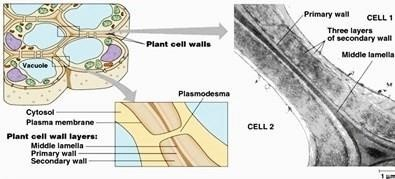Gambar 1 Dinding Sel
Membran plasma atau membran sel atau selaput plasma merupakan selaput terluar sel yang tersusun dari molekul lipoprotein (fosfolipida dan protein) dan molekul-molekul lain yag menyempurnakan struktur membran plasma. Protein pada struktur membran plasma tersebut berupa protein intrinsik (integral) merupakan protein yang berada di sela-sela phospholipida, dan protein ekstrinsik (perifer) merupakan protein yang terdapat di permukaan phospholipida. Di sisi luar membran plasma phospholipida berikatan dengan molekul glukosa membentuk ikatan glikolipida, protein berikatan dengan glukosa membentuk ikatan glikoprotein. Pada membran plasma juga terdapat molekul kolesterol. Tebal membran plasma antara 7,5 - 10 nano meter, sifat membran plasma semipermiabel atau selektif permeabel. Struktur membran plasma dapat dilihat pada gambar 70 di bawah ini
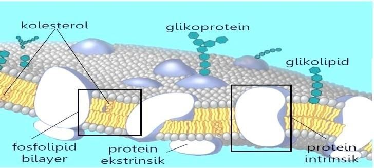Gambar 2 Membran Plasma
Secara struktural membran plasma tersusun atas fosfolipida bilayer yaitu dua lapisan lemak yang berikatan dengan fosfat. Fosfolipid merupakan molekul fosfat (bagian kepala) dan molekul lemak (bagian ekor) yang mirip dengan kepala dan ekor. Pada gambar 2 dan 3 terilat dua lapis fosfolipida dimana fosfatnya (bagian kepala) menghadap ke arah luar dan dalam membran plasma, sedangkan molekul lemak (bagian ekor) terdapat di tengah-tengah. Fosfat bersifat hidrofilik, sedangkan bagian lipida bersifat hidrofobik. Struktur fosfolipida dapat juga dilihat pada gambar 4 berikut.
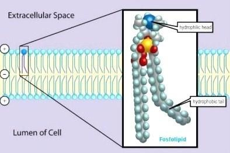Gambar 3 Struktur Fosfolipida
Protein membran merupakan protein yang terdapat pada membran sel (lihat gambar 2). Protein dalam fosfolipid dapat mencapai lebih 50% dari berat membran tersebut. Hal ini terjadi karena struktur protein yang lebih besar dan kompleks dibandingkan lemak. Protein membran terdiri dari: 1) protein integral (protein intrinsik) merupakan protein yang menembus fosfolipida bilayer, berperan dalam transpotasi beberapa molekul masuk dan keluar sel dan 2) protein perifer (protein ekstrinsik) merupakan protein yang tidak menembus atau di permukaan fosfolipida, protein perifer biasanya berupa hormon atau enzim berperan mengatur kerja membran plasma.
Fungsi membran plasma :
• Mengatur transportasi materi atau zat-zat masuk dan keluar dari sel
• Melindungi bagian atau komponen sel di sebelah dalam membrane
• Sebagai reseptor stimulus atau rangsangan untuk sel
• Tempat berlangsungnya berbagai macam reaksi kimia.
• Menjadi media hubungan antar sel dengan lingkungan luar sel
Nukleus atau inti sel merupakan komponen sel bermembran yang bentuknya bulat atau lonjong seperti cakram. Letak nukleus pada sitoplasma biasanya di tengah, tetapi pada sel tumbuhan seringkali nukleus terletak agak ke tepi sitoplasma. Umumnya pada sel tumbuhan ataupun hewan memiliki satu nukleus, tetapi ada pula yang memiliki nukleus lebih dari satu nukleus misalnya sel otot lurik. Nukleus adalah bagian sel yang ukurannya lebih besar dibandingkan dengan organel sel pada umumnya, yaitu berukuran antara 10 - 20 nm. Fungsi utama nukleus adalah mengendalikan seluruh kegiatan sel. Secara lebih rinci, fungsi nukleus antara lain :
• Sebagai pengendali seluruh aktifitas sel
• Mengandung atau membawa informasi genetik (DNA) yang akan mewariskan sifat-sifat genetik tersebut melalui pembelahan sel
• Memproduksi tRNA, rRNA, dan mRNA untuk keperluan sintesis protein
• Memproduksi ribosom
Struktur nukleus dapat dilihat pada gambar 72. Nukleus tersusun atas komponen- kompoen berikut:
a. Membran nukleus (membran inti sel), memiliki struktur lipoprotein, dengan fosfolipida bilayer seperti haknya membran plasma. Membran nukleus merupakan membran rangkap yakni membran luar dan membran dalam, dan diantara membran luar dan dalam terdapat ruang yang disebut ruang perinuklear. Di beberapa sisi dari membran luar berkesinambaungan dengan retikulum endoplasma kasar (rRE). Pada membran nukleus terdapat porus yang memungkinkan adanya hubungan antara nukleoplasma dan sitoplasma Membran nukleus ini memisahkan bagian nukleus dengan sitoplasma sel
b. Nukleoulus (anak inti) yang berfungsi untuk mensintesis berbagai macam molekul RNA (asam ribonukleat).
c. Nukleoplasma (plasma inti) merupakan cairan yang tersusun dari protein
d. Butiran kromatin yang terdapat pada nukleoplasma, yang dapat menebal menjadi struktur seperti benang yaitu kromosom yang mengandung DNA (asam deoksiribonukleat) yang berfungsi menyampaikan informasi genetik melalui sintesa protein.
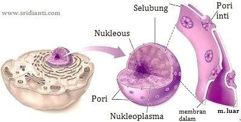Gambar 4 Nukleus
Retikulum endoplasma berupa vesikel atau kantung yang dapat berbentuk pipih, bundar, atau tubuler dan satu sama lain dapat berhubungan (Gambar 73). RE memiliki selapis membran, dan membran tersebut ada yang berhubungan dengan membran inti dan membran plasma sehingga dapat berperan sebagai penghubung antara bagian luar sel dengan bagian dalam sel. Ada dua jenis retikulum endoplasma yakni RE halus (REh) yang tidak dilekati ribosom dan RE kasar (REk) yang dilekati ribosom. RE memiliki peran anabolik dan protektif.
Retikulum endoplasma merupakan perluasan membran yang saling berhubungan yang membentuk saluran pipih atau lubang seperti tabung di dalam sitoplasma. Dalam pengamatan mikroskop, retikulum endoplasma nampak seperti saluran berkelok-kelok dan jala yang berongga-rongga. Saluran-saluran tersebut berfungsi membantu gerakan subsatansi-subsatansi dari satu bagain sel ke bagian sel lainnya.
Ribosom pada REk adalah tempat sintesa protein yang hasilnya akan melekat pada retikulum endoplasma dan biasanya ditujukan untuk luar sel. REh memiliki enzim-enzim pada permukaannya yang berfungsi untuk sintesis lipid, glikogen dan persenyawaan steroid seperti kolesterol, gliserida dan hormon.
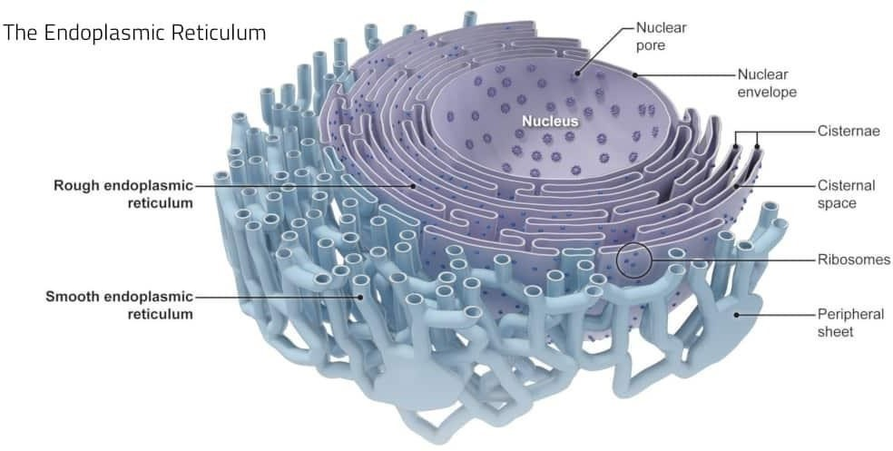Gambar 5 Retikulum Endoplasma
Badan golgi disebut juga aparatus golgi atau kompleks golgi adalah organel sel yang ditemukan Camillo Golgi, seorang ahli histologi. Badan golgi banyak dijumpai pada sel-sel yang melakukan fungsi ekskresi Badan golgi pada sel tumbuhan sering disebut diktiosom. Badan golgi berbentuk kantung-kantung pipih, tubulus dan vesikula (Gambar 74). Badan golgi memiliki membran lipoprotein seperti pada membran plasma. Struktur badan golgi memiliki dua permukaan yakni permukaan luar berbentuk cembung (forming face) disebut permukaan cis dan permukaan dalam berbentuk cekung (maturing face) disebut permukaan trans. Bagian cis menerima vesikel-vesikel yang pada umumnya berasal dari retikulum endoplasma kasar. Isi vesikel ini akan diserap ke ruanganruangan (lumen) di dalam badan golgi dan isi dari vesikel tersebut akan diproses sedemikian rupa dan proses tersebut bergerak dari bagian cis menuju bagian trans. Di ruang-ruang permukaan trans inilah senyawa-senyawa sekret/eksret akan membentuk dirinya menjadi vesikel yang kandungannya bervariasi, dan siap untuk disalurkan ke bagian-bagian sel yang lain atau ke luar sel. Fungsi badan golgi antara lain :
• Membentuk dinding sel tumbuhan
• Membentuk bahan membran plasma.
• Membentuk lisosom
• Tempat sekresi senyawa-senyawa sekret kelompok karbohidrat, lipida, dan protein.
• Membentuk akrosom pada spermatozoa
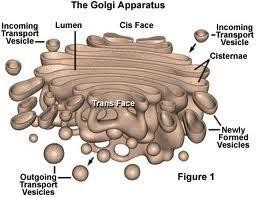Gambar 6 Badan Golgi
Lisosom adalah suatu organel sel yang berbentuk kantung (bola) diselubungi oleh selaput atau membran tunggal. Lisosom ditemukan oleh Christian de Duve pada tahun 1950. Diameter lisosom kurang lebih 500 nm. Lisosom berisi enzim hidrolitik seperti glikosidase, fosfolipase, protease, nuklease, lipase, fosfatase. Lisosom ditemukan pada sel eukariotik. Struktur lisosom dapat dilihat pada gambar 8 berikut.
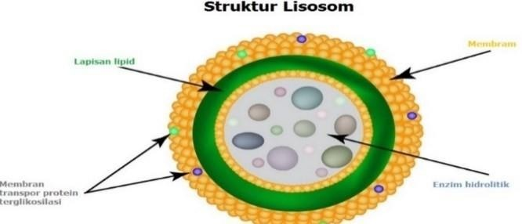Gambar 7 Lisosom
Lisosom memiliki beberapa fungsi antara lain sebagai berikut:
• Mencerna zat makanan hasil dari fagositosis (makanan berupa padatan) dan pinositosis (makanan berupa cairan)
• Mencerna makanan cadangan
• Menghancurkan organel sel yang telah rusak atau sudah tua
• Menghancurkan benda yang berada di luar sel, contohnya enzim yang dikeluarkan oleh sel sperma agar dapat menghancurkan dinding sel ovum ketika terjadinya fertilisasi.
• Menghancurkan zat asing misalnya yang memiliki sifat karsinogen yang dapat menyebabkan kanker.
• Menghancurkan diri sel sendiri yakni dengan cara melepaskan semua enzim yang berada di dalam lisosom.
Dilihat dari fungsi lisosom di atas, maka fungsi lisosom dapat dikelompokkan atas:
• Mencerna zat-zat makanan atau melisis zat-zat asing yang masuk atau ada di sitoplasma sel
• Autofagi, yakni menghancurkan atau mendegradasi bagian-bagian sel yang sudah tidak berfungsi lagi.
• Autolisis, yakni menghancurkan diri sel sendiri
Mitokondria disebut juga kondriosom, merupakan organel sel tempat berlangsungnya respirasi sel pada makhluk hidup. Bentuk dan jumlah mitokondria di dalam sel dapat berbeda tergantung tipe atau aktivitas sel. Mitokondria banyak terdapat pada sel yang memiliki aktivitas metabolisme yang tinggi, yang memerlukan energi dalam jumlah yang banyak, seperti sel otot jantung. Mitokondria umumnya berbentuk bulat lonjong atau elips dengan diameter 0,5 µm dan panjang 0,5 – 1,0 µm. Mitokondria diselubungi membran rangkap yaitu membran luar dan membran dalam (Gambar 76). Mitokondria terdiri dari bagian-bagian:
• Membran luar
Membran luar terdiri dari lapisan lipoprotein (protein dan lemak). Membran luar mengandung enzim yang terlibat dalam biosintesis lemak dan enzim yang berperan dalam proses transpor lemak ke matriks untuk menjalani β-oksidasi menghasilkan asetil-KoA.
• Membran dalam
Membran dalam merupakan tempat utama pembentukan ATP. Membran dalam membentuk lipatan-lipatan yang disebut krista. Struktur krista ini dapat meningkatkan luas permukaan dalam membran, sehingga dapat meningkatkan kemampuan mitokondria memproduksi ATP. Membran dalam mengandung protein- protein berupa enzim-enzim yang terlibat dalam reaksi fosforilasi oksidatif (pembentukan ATP) dan protein transport yang berperan mengatur keluar masuknya metabolit melalui membran dalam.
• Ruang antar membran
Ruang antar membran luar dan dalam berfungsi.
• Matriks
Pada matriks mitokondria terdapat materi genetik DNA, ribosom, ATP, ADP, enzim-enzim yang berperan dalam siklus Krebs, air, gas CO2, dan O2. Fungsi mitokondria adalah sebagai tempat terjadinya respirasi sel sehingga merupakan tempat diproduksinya energi (ATP).
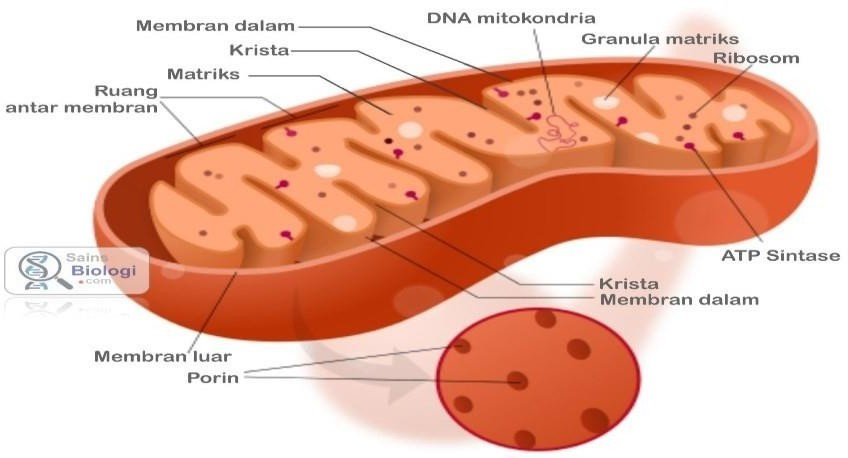Gambar 8 Mitokondria
Istilah ribosom berasal dari “ribonucleic acid” (asam ribonukleat) dan “soma” (badan). Ilmuwan yang pertama kali melakukan penelitian tentang ribosom adalah George Emil Palade dengan menggunakan mikroskop elektron. Ribosom sangat kecil (diameternya 20 – 25 nm), terdapat pada sitoplasma secara bebas atau menempel pada reticulum endoplasma.
Ribosom merupakan organel bermembran, berisi untai RNA dan protein yang beragam, karbohidrat, sedikit lemak dan mineral. Struktur ribosom terdiri dari 2 bagian yakni sub unitkecil dan subunit besar (Gambar 77). Kedua unit datang bersama-sama ketika ribosom siap untuk membuat protein baru. Subunit kecil sebenarnya tidak memiliki ukuran yang terlalu kecil, hanya lebih kecil dibandingkan dengan subunit besar. Subunit kecil berguna untuk mengalirkan/menyampaikan informasi selama sintesis protein, subunit ini disebut dengan sebutan “40S” dalam sel eukariotik dan “50S” dalam sel prokariotik. Subunit besar merupakan bagian ribosom tempat terbentuknya ikatan asam amino-asam amino yang baru untuk membuat protein, subunit disebut dengan “60S” dalam sel eukariotik dan “50S” dalam sel prokariotik. Fungsi ribosom adalah sebagai tempat terjadinya sintesis protein yakni tempat beikatannya asam amino-asam amino (polipeptida).
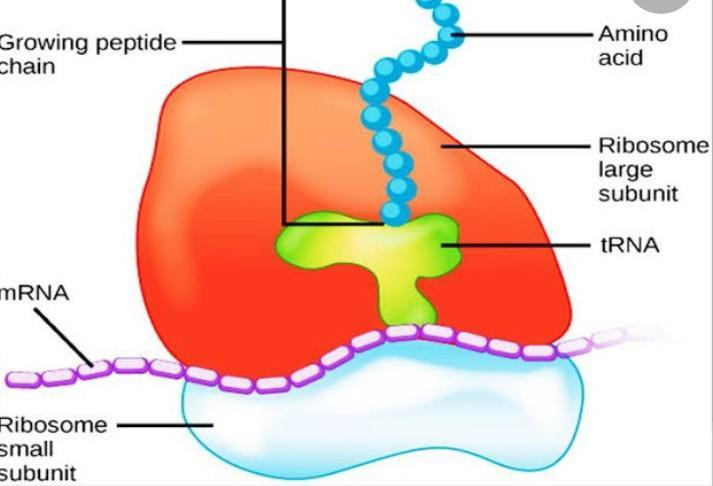Gambar 9 Ribosom
Plastida merupakan organel yang khas pada sel tumbuhan. Plastida adalah organel yang tersebar di sitoplasma pada sel tumbuhan dan terlihat jelas di bawah mikroskop sederhana. Plastida sangat bervariasi ukuran dan bentuknya serta pigmentasi yang bermacam-macam. Pada sel-sel tumbuhan berbunga biasanya berbentuk lempengan kecil bikonveks. Berdasarkan ada dan tidaknya zat warna, plastida dapat dibedakan atas:
1. Leukoplas
Leukoplas adalah plastida yang tidak berwarna, umumnya terdapat dalam sel-sel dewasa yang tidak terkena cahaya matahari, misalnya pada jaringan yang terletak sangat dalam pada bagian tumbuhan baik di dalam maupun di atas tanah. Fungsi leukoplas adalah sebagai pusat pembentukan dan penyimpanan makanan cadangan seperti pati. Leukoplas yang berfungsi menghasilkan zat makanan cadangan zat pati (amilum) disebut amiloplas, yang menghasilkan protein disebut proteinoplas, yang menghasilkan substansi berlemak disebut elaioplas.
2. Kloroplas
Kloroplas mer upakan plastida yang berwarna hijau, mengandung klorofil yaitu suatu pigmen yang memberi warna hijau pada tumbuhan (Gambar 78). Fungsinya adalah menangkap energi cahaya yang diperlukan untuk proses fotosintesis. Selain klorofil, kloroplas juga mengandung karotenoid. Klorolas terdapat pada jaringan fotosintetik misalnya daun atau bagian tumbuhan yang berwarna hijau. Bentuk kloroplas bermacam-macam, pada Spermatophyta umumnya berbentuk lensa. Kloroplas diselubungi membran rangkap yakni membran luar dan membran dalam. Membran ini membungkus substansi protein yang disebut stroma (matriks kloroplas), stroma tidak berwarna karena tidak mengandung klorofil. Di dalam kloroplas terdapat sistem membran berupa lempeng yang disebut sistem tilakoid yang terdiri dari granum (jamak:grana) dan lamela inter granum. Pada granum ini terdapat klorofil.
3. Kromoplas
Merupakan plastida yang menghasilkan warna selain hijau. Warna merah, kuning atau oranye pada bagian tumbuhan tertentu disebabkan adanya zat warna karotenoid pada bagian tumbuhan tersebut. Biasanya terdapat pada mahkota bunga, pada buah yang masak, akar wortel, buah tomat dan lain-lain. Karotenoid tersebut diantaranya: karoten (warna orange pada wortel), xantofil (warna kuning pada daun tua), antosianin (warna merah pada bunga), Fungsinya antara lain bertanggung jawan untuk sintesis dan penyimpanan pigmen, memberi warna pada bunga , buah atau bagian tumbuhan lain yang berwarna selain hijau, untuk menarik perhatian hewan polinator atau penyebar biji.
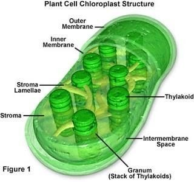Gambar 10 Kloroplas
Sentrosom dan sentriol merupakan dua komponen dari sel hewan, terutama terlibat dalam pembelahan sel (Gambar 79). Sentrosom adalah organel sel yang terdiri dari dua sentriol yang disusun secara ortogonal. Kedua sentriol tersebut cenderung tegak lurus satu sama lain yang terdapat dalam massa yang amorf yang mengandung lebih dari 100 protein yang berbeda. Letaknya di sitoplasma biasanya dekat nukleus.
Sentriol terdiri dari sembilan mikrotubulus triplet (masing-masing set terdiri dari 3 buah mikrotubulus) yang dirangkai dalam struktur seperti silinder, berfungsi menggerakkan kromosom pada saat pembelahan sel. Jenis-jenis mikrotubulus pada sentriol tersebut adalah centrin, cenexin dan tektin. Sentriol membentuk aster dan benang-benang spindel yang berfungsi mengatur arah gerak kromosom dan sekaligus untuk menarik kromosom ke kutub-kutub berseberangan selama pembelahan sel.
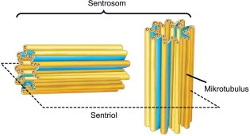Gambar 11 Sentrosom/Sentriol
merupakan organel sel dengan struktur mirip dengan lisosom, bentuknya bulat dengan diameter sekitar 0,2 – 2 µm, diselubungi membran. Ada dua macam mikrobodi yaitu peroksisom dan glioksisom. Peroksisom terdapat pada sel hewan juga tumbuhan, glioksisom ditemukan pada sel tumbuhan. Mirobodi mengandung enzim mengandung enzim katalase dan oksidase yang berpartisipasi dalam berbagai reaksi biokimia dalam sel. Mikrobodi memfasilitasi pemecahan lemak, alkohol dan asam amino.
Peroksisom menghasilkan enzim katalase yang dapat merubah peroksida air (H2O2) menjadi oksigen dan air (H2O2 2 + H2O). Hidrogen peroksida merupakan produk metabolisme sel yang berpotensi membahayakan sel. Perioksisom juga berperan dalam perubahan lemak menjadi karbohidrat. Perioksisom terdapat pada sel hewan dan sel tumbuhan (Gambar 80). Pada sel hewan, peroksisom banyak terdapat di hati dan ginjal, sedangkan pada tumbuhan, perioksisom terdapat dalam berbagai tipe sel.
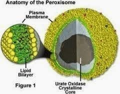Gambar 12 Struktur Peroksisom
Glioksisom merupakan mikrobodi yang terdapat pada sel tumbuhan. Organel ini banyak ditemukan di dalam jaringan lemak pada biji yang sedang berkecambah. Glioksisom menghasilkan enzim β-peroxisomal oksidase yang berfungsi mengoksidasi (mengkonversi) asam lemak menjadi asetil-CoA dan akhirnya dihasilkan energi (ATP) yang diperlukan untuk perkecambahan.
1. Mikrotubulus
Mikrotubulus adalah salah satu komponen sitoplasma, terdapat pada sel-sel hewan maupun sel tumbuhan berupa silinder atau tabung panjang dan berongga. Diameter luar tabung sekitar 24 nm, dan diameter bagian dalamnya sekitar 12 nm. Mikrotubulus merupakan polimer protein tubulin yang terangkai dalam susunan heliks (terpilin), bersifat kaku. Monomer dari polimer tubulin adalah dimer α / β-tubulin. Mikrotubulus tunggal terdiri dari protofilamen-protofilamen. Biasanya sekitar tiga belas protofilamen terkait dalam satu mikrotubulus.
Peranan mirotubulus antara lain sebagai rangka dalam sel (sitoskeleton), merupakan jaringan struktural sel yang memberi bentuk sel. Selain itu mikrotubulus membantu transportasi seluler, merupakan komponen utama yang membangun silia dan flagel. Mikritubulus juga terlibat dalam pemisahan kromosom/kromatid dalam pembelahan sel mitosis dan meiosis, membentuk benang-benang gelendong selama berlangsungnya pembelahan sel.
2. Mikrofilamen
Mikrofilamen merupakan benang-benang halus yang tersusun dari protein aktin. Mikrofilamen dibentuk oleh polimerisasi monomer protein aktin (aktin globular) dalam susunan heliks (terpilin). Mikrofilamen adalah komponen dari sitoskeleton. Diameter mikrofilamen sekitar 5-7 nanometer (nm), sehingga untuk mengamatinya harus menggunakan mikroskop elektron.
Mikrofilamen terlibat dalam sitokinesis dan motilitas sel seperti gerakan amoeboid. Umumnya mikrofilamen ikut berperan dalam bentuk sel, kontraktilitas sel, stabilitas mekanis, eksositosis, dan endositosis. Mikrofilamen kuat dan relatif fleksibel. Motilitas sel terjadi karena pemanjangan salah satu ujung dan kontraksi ujung yang lain. Mikrotubulus dan mikrofilamen adalah dua komponen dalam sitoskeleton.
Mikrotubulus dan mikrofilamen adalah struktur dinamis. Sifat dinamis tersebut diatur oleh protein yang terkait dengan polimer. Perbedaan utama antara mikrotubulus dan mikrofilamen adalah struktur dan fungsinya. Mikrotubulus memiliki struktur silinder yang panjang dan berongga, terbentuk oleh polimerisasi protein tubulin. Peran utama mikrotubulus adalah memberikan dukungan mekanis sel, terlibat dalam pemisahan kromosom/kromatid selama pembelahan sel dan membantu transportasi seluler.
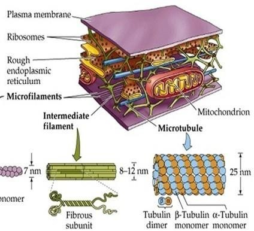Gambar 13 Mikrotubulus dan Mikrofilamen
Vakuola merupakan komponel sel pada sel tumbuhan ataupun sel hewan. Vakuola selalu ditemukan pada sel tumbuhan, seluruh jenis tumbuhan memiliki vakuola. Berbeda dengan tumbuhan, pada sel hewan tidak semua jenisnya mempunyai vakuola. Vakuola sel hewan mempunyai ukuran yang jauh lebih kecil dari pada vakuola sel tumbuhan. Ukuran vakuola sel tumbuhan tergantung usia sel, semakin dewasa sel maka ukuran vakuolanya juga semakin besar, dan kehadiran vakuola ini permanen (terus ada selama sel tumbuhan itu hidup). Vakuola pada sel tumbuhan umumnya berukuran besar hingga hampir memenuhi seluruh isi sitoplasma pada sel yang telah dewasa.
Organel ini dibungkus oleh suatu membran tunggal yang disebut tonoplas. Di dalam tonoplas terdapat cairan yang umumnya disebut dengan getah sel. Getah ini sebagian besar tersusun atas air dan zat-zat terlarut lain tergantung jenis tumbuhannya. Zat-zat terlarut diantaranya garam mineral, sukrosa, enzim, alkaloid, basa, asam. Sel yang masih muda pada umumnya akan memiliki banyak vakuola yang berukuran kecil, seiring dengan berkembangan sel tersebut, vakuola-vakuola tadi akan bersatu membentuk vakuola tunggal yang berukuran besar.
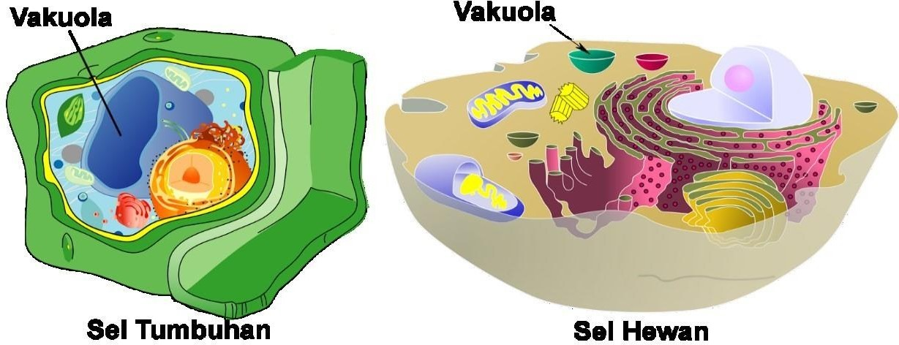Gambar 14 Vakuola pada sel tumbuhan dan hewan
Fungsi vakuola. Tumbuhan memiliki vakuola yang berfungsi sebagai osmoregulator yakni menjaga nilai osmotik sel (mengendalikan tekanan turgor sel), tempat menyimpan bahan tertentu, wadah sisa metabolisme (metabolit sekunder) dan berperan dalam degradasi organel-organel sel yang telah tua atau rusak. Vakuola sebagai osmoregulator.
Kandungan air di dalam vakuola sangat mempengaruhi tekanan turgor sel. Tekanan turgor yang tinggi menyebabkan sel tegang dan sebaliknya tekanan turgor tyang rendah menyebabkan sel menjadi kendur yang akhirnya menyebakan tumbuhan layu. Vakuola menjadi tempat menyimpan berbagai bahan tertentu seperti kristal kalsium oksalat dan pigmen tumbuhan. Banyak tumbuhan, di organ-organ tertentu terdapat kalsium oksalat, misalnya pada batang bayam terdapat kalsium oksalat berbentuk kristal pasir, pada sel-sel mesofil daun Aloe vera dan daun Mirabilis jalapa terdapat kalsium oksalat berbentuk rafida.
Pigmen tumbuhan seperti kelompok antosianin larut dalam air dan disimpan dalam vakuola, Beberapa tumbuhan memiliki vakuola yang mengandung zat asam seperti jeruk nipis. Vakuola sebagai wadah sisa-sisa metabolisme (metabolit sekunder) pada sel tumbuhan. Hasil-hasil metabolisme skunder tumbuhan seperti nikotin dan alkaloid akan dibuang dalam vakuola supaya tidak menjadi racun yang dapat membahayakan sel itu sendiri. Vakuola berperan dalam degradasi organel atau komponen sel yang sudah tua atau rusak. Hali ini karena vakuola juga mengandung enzim hidrolitik, yang dapat melisis atau menghancurkan organel atau komponen sel yang sudah tua atau rusak seperti halnya peranan lisosom pada sel hewan.
Struktur sel tumbuhan dan sel hewan pada dasarnya mempunyai banyak persamaan dalam kandungan kimia maupun jenis-jenis organelnya. Meskipun demikian karena peran ekologis yang berbeda pada tumbuhan dan hewan maka ada beberapa perbedaan antara sel tumbuhan dan sel hewan tersebut. Tumbuhan berperan sebagai produsen, sementara hewan berperan sebagai konsumen. Perbedaan mendasar antara sel tumbuhan dan sel hewan adalah dalam jenis organel atau komponen sel seperti pada keberadaan dinding sel, plastida, lisosom, vakuola, sentosom/sentriol dan beberapa karakter sel yang disebabkan perbedaan organel sel yang dimiliki. Untuk lebih mudah memahami perbedaan sel tumbuhan dan sel hewan tersebut perhatikan tabel dan gambar berikut ini
| Perbedaan | Sel Hewan | Sel Tumbuhan |
|---|---|---|
| Bentuk Sel | Dapat berubah bentuk karena tidak memiliki dinding sel. Cenderung dipengaruhi sitoskeleton. | Bentuk sel kaku dan jarang berubah bentuk. Cenderung dipengaruhi oleh kehadiran dinding sel. |
| Dinding Sel | Tidak ada | Ada |
| Lisosom | Ada | Tidak ada/jarang ditemukan |
| Plastida | Tidak ada | Ada |
| Sentrosom/sentriol | Ada | Tidak ada/jarang ditemukan |
| Peroksisom | Ada | Ada |
| Glioksisom | Tidak ada | Ada |
| Vakuola | Ada, kecil dan tidak permanen. | Ada, permanen. Vakuola besar dan berfungsi menyimpan air, garam, pigmen, dan zat makanan. |
Gambar 15 Struktur Sel Tumbuhan dan Sel Hewan
Membran plasma merupakan selubung sel di sebelah luar sitoplasma. Di dalam sitoplasma terdapat bagian atau komponen sel yang disebut organel dan juga terdapat air dan bahan kimia lain yang ikut menyusun sitoplasma. Semuanya itu diselubungi oleh membran plasma. Bukan hanya melindungi secara fisik, membran plasma juga mengontrol lalu-lintas zat keluar masuk sel (transportasi zat melalui membran plasma). Membran plasma bersifat selektif permeabel (semipermeabel) artinya membran plasma dapat dilalui dengan lebih mudah oleh beberapa zat daripada beberapa zat lainnya.
Molekul yang dapat melewati membran dengan mudah antara lain adalah air, etanol, CO2 dan O2. Sementara molekul lain dapat melalui membran plasma membutuhkan mekanisme khusus, contohnya glukosa. Sifat selektif permeabel tersebut disebabkan struktur membran plasma yang lipoprotein dengan struktur fosfolipida bilayer dan struktur protein yang sudah dijelaskan sebelumnya.
Transportasi melalui membran dibedakan menjadi dua yaitu transpor aktif dan transpor pasif. Transpor aktif merupakan transpor zat melalui membran plasma melawan gradien konsentrasi, memerlukan energi dan menggunakan protein pembawa. Contoh zat-zat yang melalui membranplasma melalui transpor aktif adalah glukosa dan asam amino. Transpor pasif merupakan tranpor yang tidak memerlukan energi, berlangsung karena adanya perbedaan konsentrasi zat/larutan di dalam dan luar sel.
a) Transpor Aktif
Transpor aktif menggerakan molekul melintasi membran sel dari daerah konsentrasi rendah ke daerah konsentrasi tinggi. Transpor aktif memerlukan penggunaan energi. Zat-zat yang diserap melalui transpor aktif, misalnya glukosa dan asam amino yang diserap usus kecil pada manusia. Transpor aktif dapat terjadi melallui mekanisme pompa ion
1. Pompa ion
Pompa ion adalah transpor ion melalui membran dengan cara melakukan pertukaran ion dari dalam sel dengan ion di luar sel. Transpor dilakukan oleh protein transpor atau protein pembawa yang tertanam pada membran plasma, menggunakan sumber energi ATP. Protein pembawa dapat bekerja dengan gradien konsentrasi (selama transportasi pasif), tetapi beberapa protein pembawa dapat memindahkan zat terlarut melawan gradien konsentrasi (dari konsentrasi rendah ke konsentrasi tinggi), dengan masukan energi. Protein pembawa yang digunakan untuk memindahkan bahan melawan gradien konsentrasi mereka, protein ini dikenal sebagai pompa. Seperti pada jenis-jenis kegiatan selular, ATP memasok energi untuk kebanyakan transportasi aktif.
Contoh dari jenis sistem transpor aktif, seperti yang ditunjukkan pada Gambar 84 di bawah, adalah pompa natrium-kalium, yang melakukan pertukaran ion natrium ion kalium melintasi membran plasma. Sistem pompa ion (natrium-kalium) menggerakkan ion natrium dan kalium melawan gradien konsentrasi besar. Ia menggerakkan dua ion kalium ke dalam sel di mana kadar kalium yang tinggi, dan memompa tiga ion natrium keluar dari sel dan ke dalam cairan ekstraseluler.
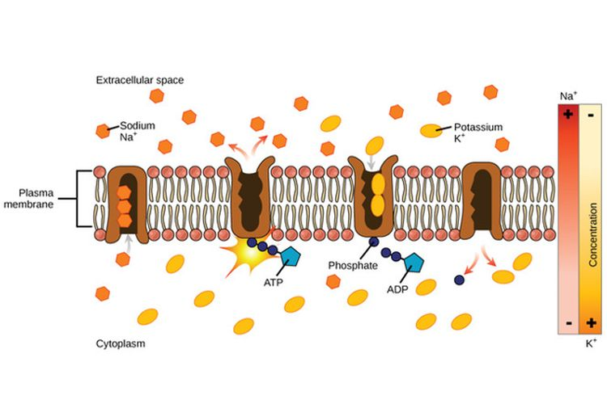Gambar 16 Mekanisme Pompa Ion (Natrium-Kalium)
2. Endositosis
Endositosis merupakan transpor yang memerlukan energi. Endositosis merupakan proses masuknya senyawa dari luar ke dalam sel melalui membran dengan cara pembungkusan senyawa atau cairan ekstraselular dengan pelekukan ke dalam sebagian membran (Gambar 85). Istilah endositosis berasal dari bahasa Yunani, endo artinya ke dalam dan cytos artinya sel. Membran sel membentuk pelipatan ke dalam (invaginasi) dan “memakan” benda yang akan dipindahkan ke dalam sel.
Di dalam sel, benda tersebut dilapisi oleh sebagian membran sel yang terlepas membentuk kantung (vesikel). Vesikel tersebut berisi materi yang sebelumnya berada di luar sel. Ada tiga tipe endositosis, yakni (1) fagositosis , jika materi yang dimasukkan berupa zat padat, (2) pinositosis, jika materi yang dimasukkan berupa larutan, (3) endositosis yang diperantarai reseptor, terjadi saat fluida ekstraseluler terikat pada reseptor spesifik yang berkumpul pada lubang yang dilapisi protein pada membran plasma, kemudian membnetuk vesikula. Transpor ini bertujuan untuk memperoleh substansi spesifik dalam jumlah besar.
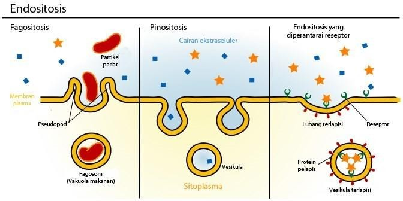Gambar 17 Mekanisme Endositosis
3. Eksositosis
Eksositosis merupakan proses pengeluaran zat dari dalam sel keluar sel. Sekret terbungkus kantong membran yang selanjutnya melebar dan pecah Kemudian kantung membran tersebut bergabung kembali dengan membran plasma sehingga sisa zat makanan akan dibuang keluar sel. Eksositosis terjadi pada beberapa sel kelenjar atau sel sekresi. Misalnya, sel-sel kelenjar di pankreas yang mengeluarkan enzim ke saluran pankreas yang bermuara di usus halus. Contoh lainnya adalah neuron yang menggunakan eksositosis untuk melepaskan neurotransmitter yang memberikan sinyal kepada neuron lain atau sel otot.
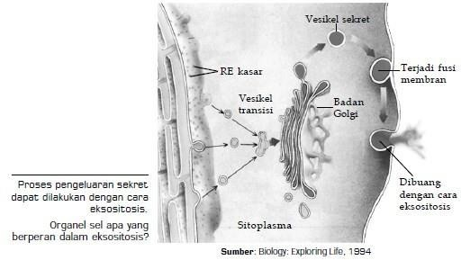Gambar 18 Eksositosis
b) Transportasi Pasif
Transpor pasif merupakan transpor ion, molekul, senyawa dari luar atau dalam sel yang tidak memerlukan energi. Transportasi ini berlangsung karena adanya perbedaan konsentrasi antara zat yang berada di dalam sel dengan zat yang berada di luar sel. Zat-zat yang ditranspor bergerak dari daerah berkonsentrasi tinggi hingga daerah berkonsentrasi rendah. Transpor pasif meliputi difusi dan osmosis.
1. Difusi
Difusi merupakan penyebaran molekul-molekul suatu zat dari konsentrasi tinggi ke konsentrasi rendah hingga terjadi keseimbangan konsentrasi. Difusi merupakan proses spontan yang tidak memerlukan masukan energi. Mekanisme transpor ini meliputi berbagai zat (padat, cair, gas). Difusi bertujuan untuk mencapai keseimbangan konsentrasi antara zat dengan pelarutnya. Selain itu, difusi juga berperan dalam peristiwa pertukaran materi dari suatu sel dengan lingkungannya.
Salah satu contoh penting adalah pegambilan oksigen oleh sel yang melakukan respirasi seluler. Oksigen terlarut berdifusi ke dalam sel tersebut melintasi membran plasma. Selama respirasi seluler terus mengonsumsi O2 saat molekul tersebut masuk, difusi ke dalam sel akan berlanjut karena gradien konsentrasi mendukung pergerakan ke arah itu. Kecepatan difusi bergantung pada beberapa aspek, diantaranya adalah:
1. Wujud Materi: Semakin besar ikatan antar molekul, makin lama difusi terjadi (padat lebih sulit melakukan difusi).
2. Suhu: Semakin tinggi suhu, maka ikatan antar molekul akan cepat terputus. Hal itu menyebabkan difusi menjadi cepat.
3. Ukuran Molekul: Molekul yang berukuran kecil akan lebih mudah untuk melintasi suatu membran dari pada molekul yang besar pada suhu yang sama.
4. Konsentrasi: Semakin besar perbedaan konsentrasi antara zat dan pelarutnya, atau perbedaan konsentrasi zat pada dua tempat yang berbeda, menyebabkan semakin besar rata-rata difusinya.
Difusi Terfasilitasi (Facilitated Diffusion)
Difusi difusi terfasilitasi atau difusi dipermudah merupakan mekanisme transpor yang dibantu oleh protein-protein integral dalam membran plasma (protein pembawa). Protein-protein tersebut membentuk struktur menyerupai saluransaluran, sehingga molekul bisa melintasi membran plasma. Beberapa protein ada yang berikatan dengan suatu molekul dan melintasi membran plasma. Difusi terfasilitasi juga merupakan transpor pasif karena hanya mempercepat proses difusi dan tidak merubah arah gradien konsentrasi. Pada proses difusi yang terfasilitasi oleh protein, molekul-molekul seperti asam amino, gula, tidak dapat melalui membran plasma. Molekul tersebut melewati saluran yang dibentuk oleh suatu protein membran yang disebut protein transpor. Proses difusi zat dipermudah dengan protein pembawa.
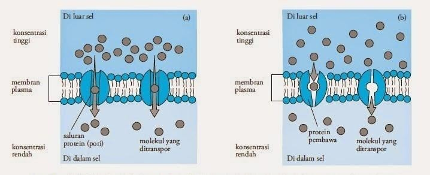Gambar 19 Difusi zat (a) dipermudah dengan saluran protein; (b) terfasilitasi dengan protein pembawa
Difusi dapat juga dipermudah oleh saluran protein. Banyak molekul yang berukuran besar (misalnya, asam amino dan glukosa) dan ion (misalnya, K+, Na+,Cl- ) tertahan oleh membran ganda fosfolipid, tetapi dapat berdifusi melalui saluran yang dibentuk oleh protein. Protein yang biasanya membentuk saluran adalah protein integral. Saluran protein dapat membuka dan menutup karena adanya rangsangan listrik atau kimiawi, contohnya saat molekul neurotransmitter dapat membuka saluran protein pada membran sel saraf ion Na+ dalam masuk ke dalam sel.
2. Osmosis
Peristiwa yang penting dalam kehidupan ialah osmosis (Gambar 88). Pada dasarnya osmosis masih termasuk peristiwa difusi. Pada peristiwa osmosis, air dari larutan yang konsentrasinya rendah (hipotonis) akan bergerak ke konsentrasi yang lebih tinggi (hipertonis). Pada gambar berikut, air akan bergerak menembus membran selektif permeabel sehingga pada sisi tabung lainnya, volume air semakin bertambah. Larutan, misalnya glukosa mempunyai tekanan osmosis. Tekanan osmotis dapat diukur dengan osmometer. Naiknya air pada pipa osmometer dapat dipakai untuk menentukan tekanan osmotis. Jadi tekanan osmotis dapat dikatakan dengan tekanan yang diperlukan untuk mencegah pelarut bergerak melalui membran semi permeabel.
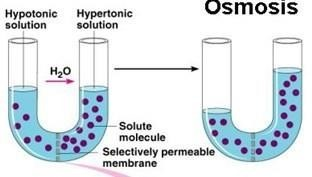Gambar 20 Osmosis
Salah satu penyebab zat dapat bergerak secara osmosis adalah adanya perbedaan konsentrasi zat total. Akibat keadaan ini, molekul air yang berada pada larutan hipotonik dapat berpindah menuju larutan hipertonik. Namun, keadaan ini juga bisa berlangsung sebaliknya. Meskipun zat terlarut banyak terkandung pada larutan hipotonik, proses transpor zat akan tetap terjadi secara osmosis. Sementara itu, andaikan dua larutan bersifat isotonik, molekul air akan berpindah melalui membran dengan kelajuan sama. Akibatnya selisih osmosis tidak terjadi pada dua larutan.
Contoh peristiwa osmosis pada sel hewan adalah pada sel darah merah. Sel darah merah akan tetap stabil bentuknya bila ditempatkan pada larutan garam 1 %. Sel darah merah yang sama bila ditempatkan pada lingkungan hipotonik, misalnya akuades akan menyebabkan sel mengembang terus menerus. Lingkungan hipotonik dengan kondisi konsentrasi air di luar sel lebih tinggi daripada di dalam sel menyebabkan air masuk terus menerus ke dalam sel hingga sel tersebut pecah (hemolisis). Pada lingkungan hipertonik dengan kondisi konsentrasi air di luar sel lebih rendah (lebih pekat) dari pada di dalam sel sehingga sel mengkerut (krenasi).
Sel-sel tumbuhan memiliki dinding selulosa yang keras dan elastis sehingga dapat membatasi volume sel serta mempertahankan sel agar tidak pecah. Bila sel tumbuhan ditempatkan pada lingkungan hipotonik, misalnya akuades, air akan masuk ke dalam sel. Sel tumbuhan akan terus membengkak sampai selulosa tidak dapat direntangkan lagi. Namun sel tersebut tidak pecah. Sel tumbuhan pada keadan ini disebut turgid. Sel-sel tumbuhan bila ditempatkan pada lingkungan hipertonik, misalnya pada larutan garam dengan konsentrasi lebih dari 1 % akan menyebabkan keluarnya air dari vakuola. Sitoplasma mengkerut dan membran plasma terlepas dari dindng sel. Peristiwa ini disebut plasmolisis.
• Sel merupakan unit terkecil secara struktural dan fungsional pada makhluk hidup. Sel tersusun atas bahan-bahan kimia dan komponen atau organel-organel sel yang secara keseluruhan saling mendukung untuk berlangsungnya kehidupan sel.
• Sel tumbuhan dan sel hewan mempunyai banyak persamaan. Namun karena adanya perbedaan peran ekologis tumbuhan dan hewan, maka terdapat beberapa perbedaan terutama pada organel/komponen sel, antara lain keberadaan dinding sel, lisosom, sentrosom/sentriol, plastida, vakuola, dan beberapa karakter lainnya.
• Membran plasma, di antaranya, berperan dalam transportasi zat dari dan ke dalam sel. Ada dua macam transportasi melalui membran plasma, yakni transportasi aktif dan transportasi pasif.